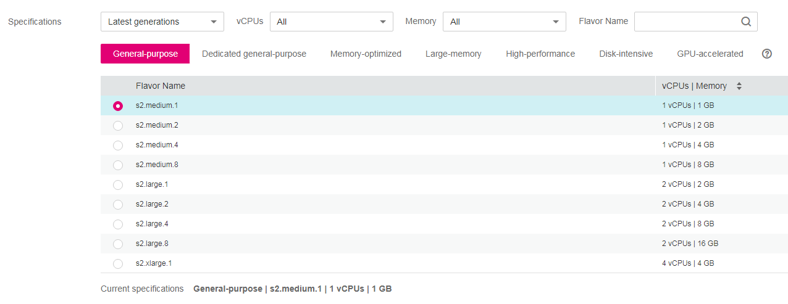
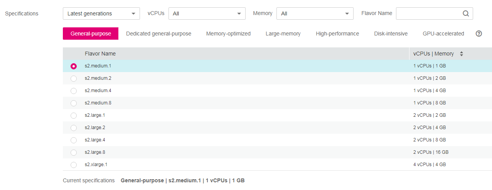

The public cloud provides the following ECS types for different application scenarios:
- General-purpose
- Dedicated general-purpose
- Memory-optimized
- Large-memory
- Disk-intensive
- High-performance computing
- GPU-accelerated
ECS Flavor Naming Rules
ECS flavors are named using the format of "AB.C.D".
The format is defined as follows:
- A specifies the ECS type. For example, s indicates a general-purpose ECS, c a computing ECS, and m a memory-optimized ECS.
- B specifies the type ID. For example, the 3 in s3 indicates a general-purpose third-generation ECS.
- C specifies the flavor size, such as medium, large, xlarge, 2xlarge, 4xlarge, or 8xlarge.
- D specifies the ratio of memory to vCPUs expressed in a digit. For example, value 4 indicates that the ratio of memory to vCPUs is 4.
Obtaining Specifications When Creating an ECS
Specifications for the ECS being created are located in the specifications list.
Figure 1 ECS specifications


Network QoS
Network QoS uses basic technologies to improve the quality of network communication. A network with QoS enabled offers predictable network performance and effectively allocates network bandwidth to use network resources.
To obtain the QoS data of an ECS flavor, including the maximum bandwidth, assured bandwidth, maximum PPS, and NIC multi-queue, see ECS Specifications.
The intranet bandwidth and PPS of an ECS are determined based on ECS flavors.
- Assured intranet bandwidth: guaranteed bandwidth allocated to the ECS
- Maximum intranet bandwidth: maximum bandwidth that can be allocated to the ECS
- Maximum intranet PPS: maximum number of packets that the ECS can transmit and receive per second
- NIC multi-queues: allocates NIC interrupt requests to multiple vCPUs for higher PPS performance and bandwidth
- Maximum NICs: maximum number of NICs that can be attached to an ECS.

- For instructions about how to test PPS, see How Can I Test Network Performance?
- For instructions about how to enable NIC multi-queue, see Enabling NIC Multi-Queue.